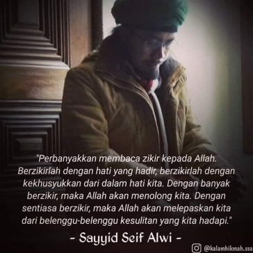

NYAWAKU UNTUK MU SAUDARAKU YA SAYYID

Saat berkumandang Read more......
Yaa Nabi Salam ‘Alaika
Yaa Rosul Salam ‘Alaika
Yaa Habib Salam ‘Alaika
Salawatullah ‘Alaika
Sayyid Alwi bersama Prabu Tribuana di Sigong
Seluruh sendi, panca Indra dan Cakra bergetar hebat. Diantara zikir yang sedang aku lakukan semakin kencang dibacakan dalam kalbu.
Tak terhitung jumlah jama’ah semuanya berkidung memuja keagungan Allah dan kekagumannya terhadap pemimpin nya yaitu Rosululloh.
Raih Ikatan dengan Rosululloh

Suatu ketika As Sayyidina Anas bin Malik Radhiyallahu ‘anhu mengusap wajahnya dengan sapu tangan, lalu memberikannya kepada pembantunya agar sapu tangan itu dibersihkan.
Tiba-tiba pembantu itu memasukkan sapu tangan tadi kedalam api hingga terbakar semua kotoran yang menempel.
Namun yang menghairankan tak lama kemudian pembantu itu menarik sesuatu dari api tadi...read more
Tolak Kejahatan Dengan Wudu

Wudu’ membawa cahaya langit dan memiliki suatu kekuatan perlindungan yang kuat.
Semakin sering kita memperbaharui wudu’ kita, semakin terlindungi diri kita.
Allah SWT tidak membiarkan diri kita lemah tak berdaya begitu saja di dunia ini. Jika kalian memperbaharui wudu’ kalian, untuk setiap sholat, cahaya ilahiah itu akan terkumpul sebagai ‘nuurun ‘alaa nuur’ (cahaya di atas cahaya, red.).read more
Tiga Ancaman Alloh SWT

Alloh SWT mengancam manusia yang “hubud dunia” atau condong kepada dunia hingga lalai kepada akhirat.
ada 6 ancaman dari Alloh SWT, 3 siksaan akan langsung di bayar kontan di dunia dan 3 akan di dapat di akhirat.
untuk malam ini 3 siksaan yang akan di bayar kontan di dunia... read more
Ahbaburrosul Indonesia 2021